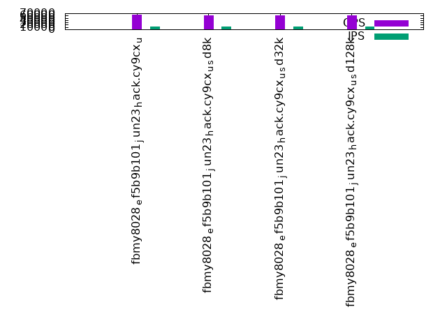

Introduction
This is a report for the insert benchmark with 12000M docs and 24 client(s). It is generated by scripts (bash, awk, sed) and Tufte might not be impressed. An overview of the insert benchmark is here and a short update is here. Below, by DBMS, I mean DBMS+version.config. An example is my8020.c10b40 where my means MySQL, 8020 is version 8.0.20 and c10b40 is the name for the configuration file.
The test server has 80 cores, hyperthreads enabled, 256G RAM and fast NVMe with XFS. The benchmark was run with 24 clients and there were 1 or 3 connections per client (1 for queries or inserts without rate limits, 1+1 for rate limited inserts+deletes). There are 24 tables, with a client per table. It loads 500M rows per-table without secondary indexes, creates secondary indexes, then inserts 50M rows per-table with a delete per insert to avoid growing the table. It then does 3 read+write tests for 3600s each that do queries as fast as possible with 100, 500 and then 1000 inserts/second/client concurrent with the queries and 1000 deletes/second to avoid growing the table. The database is larger than memory.
The tested DBMS are:
- fbmy8028_ef5b9b101_jun23_hack.cy9cx_u - FB MySQL 8.0.28 compiled at git hash ef5b9b101 in June 2023 with RocksDB 8.3.1, cy9cx_u (base) config
- fbmy8028_ef5b9b101_jun23_hack.cy9cx_u_sd8k - FB MySQL 8.0.28 compiled at git hash ef5b9b101 in June 2023 with RocksDB 8.3.1, cy9cx_u config, adds rocksdb_compaction_sequential_deletes[_window]=8191/8192
- fbmy8028_ef5b9b101_jun23_hack.cy9cx_u_sd32k - FB MySQL 8.0.28 compiled at git hash ef5b9b101 in June 2023 with RocksDB 8.3.1, cy9cx_u config, adds rocksdb_compaction_sequential_deletes[_window]=32767/32768
- fbmy8028_ef5b9b101_jun23_hack.cy9cx_u_sd128k - FB MySQL 8.0.28 compiled at git hash ef5b9b101 in June 2023 with RocksDB 8.3.1, cy9cx_u config, adds rocksdb_compaction_sequential_deletes[_window]=131071/131072
Contents
- Summary
- l.i0: load without secondary indexes
- l.x: create secondary indexes
- l.i1: continue load after secondary indexes created
- q100.1: range queries with 100 insert/s per client
- q500.1: range queries with 500 insert/s per client
- q1000.1: range queries with 1000 insert/s per client
Summary
The numbers are inserts/s for l.i0 and l.i1, indexed docs (or rows) /s for l.x and queries/s for q100, q500, q1000. The values are the average rate over the entire test for inserts (IPS) and queries (QPS). The range of values for IPS and QPS is split into 3 parts: bottom 25%, middle 50%, top 25%. Values in the bottom 25% have a red background, values in the top 25% have a green background and values in the middle have no color. A gray background is used for values that can be ignored because the DBMS did not sustain the target insert rate. Red backgrounds are not used when the minimum value is within 80% of the max value.
| dbms | l.i0 | l.x | l.i1 | q100.1 | q500.1 | q1000.1 |
|---|---|---|---|---|---|---|
| fbmy8028_ef5b9b101_jun23_hack.cy9cx_u | 537418 | 1384414 | 57441 | 68096 | 64286 | 58654 |
| fbmy8028_ef5b9b101_jun23_hack.cy9cx_u_sd8k | 536481 | 1386974 | 57562 | 64253 | 60577 | 55112 |
| fbmy8028_ef5b9b101_jun23_hack.cy9cx_u_sd32k | 533737 | 1392284 | 57375 | 64859 | 60276 | 54966 |
| fbmy8028_ef5b9b101_jun23_hack.cy9cx_u_sd128k | 537996 | 1396985 | 56891 | 65246 | 60816 | 56063 |
This table has relative throughput, throughput for the DBMS relative to the DBMS in the first line, using the absolute throughput from the previous table. Values less than 0.95 have a yellow background. Values greater than 1.05 have a blue background.
| dbms | l.i0 | l.x | l.i1 | q100.1 | q500.1 | q1000.1 |
|---|---|---|---|---|---|---|
| fbmy8028_ef5b9b101_jun23_hack.cy9cx_u | 1.00 | 1.00 | 1.00 | 1.00 | 1.00 | 1.00 |
| fbmy8028_ef5b9b101_jun23_hack.cy9cx_u_sd8k | 1.00 | 1.00 | 1.00 | 0.94 | 0.94 | 0.94 |
| fbmy8028_ef5b9b101_jun23_hack.cy9cx_u_sd32k | 0.99 | 1.01 | 1.00 | 0.95 | 0.94 | 0.94 |
| fbmy8028_ef5b9b101_jun23_hack.cy9cx_u_sd128k | 1.00 | 1.01 | 0.99 | 0.96 | 0.95 | 0.96 |
This lists the average rate of inserts/s for the tests that do inserts concurrent with queries. For such tests the query rate is listed in the table above. The read+write tests are setup so that the insert rate should match the target rate every second. Cells that are not at least 95% of the target have a red background to indicate a failure to satisfy the target.
| dbms | q100.1 | q500.1 | q1000.1 |
|---|---|---|---|
| fbmy8028_ef5b9b101_jun23_hack.cy9cx_u | 2381 | 11907 | 23828 |
| fbmy8028_ef5b9b101_jun23_hack.cy9cx_u_sd8k | 2381 | 11907 | 23834 |
| fbmy8028_ef5b9b101_jun23_hack.cy9cx_u_sd32k | 2381 | 11907 | 23828 |
| fbmy8028_ef5b9b101_jun23_hack.cy9cx_u_sd128k | 2381 | 11907 | 23828 |
| target | 2400 | 12000 | 24000 |
l.i0
l.i0: load without secondary indexes. Graphs for performance per 1-second interval are here.
Average throughput:
Insert response time histogram: each cell has the percentage of responses that take <= the time in the header and max is the max response time in seconds. For the max column values in the top 25% of the range have a red background and in the bottom 25% of the range have a green background. The red background is not used when the min value is within 80% of the max value.
| dbms | 256us | 1ms | 4ms | 16ms | 64ms | 256ms | 1s | 4s | 16s | gt | max |
|---|---|---|---|---|---|---|---|---|---|---|---|
| fbmy8028_ef5b9b101_jun23_hack.cy9cx_u | 43.568 | 56.385 | 0.005 | 0.042 | 0.237 | ||||||
| fbmy8028_ef5b9b101_jun23_hack.cy9cx_u_sd8k | 43.658 | 56.295 | 0.006 | 0.041 | nonzero | 0.258 | |||||
| fbmy8028_ef5b9b101_jun23_hack.cy9cx_u_sd32k | 41.706 | 58.248 | 0.006 | 0.041 | nonzero | 0.381 | |||||
| fbmy8028_ef5b9b101_jun23_hack.cy9cx_u_sd128k | 43.873 | 56.077 | 0.009 | 0.041 | nonzero | 0.463 |
Performance metrics for the DBMS listed above. Some are normalized by throughput, others are not. Legend for results is here.
ips qps rps rmbps wps wmbps rpq rkbpq wpi wkbpi csps cpups cspq cpupq dbgb1 dbgb2 rss maxop p50 p99 tag 537418 0 8 0.3 1835.0 116.7 0.000 0.001 0.003 0.222 354757 39.6 0.660 59 376.2 376.7 92.4 0.237 22977 13486 12000m.fbmy8028_ef5b9b101_jun23_hack.cy9cx_u 536481 0 7 0.2 1846.9 117.4 0.000 0.000 0.003 0.224 346019 39.7 0.645 59 376.3 376.9 92.9 0.258 23376 14086 12000m.fbmy8028_ef5b9b101_jun23_hack.cy9cx_u_sd8k 533737 0 15 0.5 1847.0 117.0 0.000 0.001 0.003 0.224 356562 39.7 0.668 60 375.8 376.4 93.7 0.381 22977 14288 12000m.fbmy8028_ef5b9b101_jun23_hack.cy9cx_u_sd32k 537996 0 10 0.3 1841.1 116.7 0.000 0.001 0.003 0.222 355940 39.8 0.662 59 375.5 376.1 92.4 0.463 23177 13884 12000m.fbmy8028_ef5b9b101_jun23_hack.cy9cx_u_sd128k
l.x
l.x: create secondary indexes.
Average throughput:
Performance metrics for the DBMS listed above. Some are normalized by throughput, others are not. Legend for results is here.
ips qps rps rmbps wps wmbps rpq rkbpq wpi wkbpi csps cpups cspq cpupq dbgb1 dbgb2 rss maxop p50 p99 tag 1384414 0 2539 144.6 1710.1 99.7 0.002 0.107 0.001 0.074 43543 30.5 0.031 18 771.7 771.9 185.5 0.007 NA NA 12000m.fbmy8028_ef5b9b101_jun23_hack.cy9cx_u 1386974 0 2544 145.1 1717.6 100.6 0.002 0.107 0.001 0.074 43995 30.6 0.032 18 771.5 771.6 185.4 0.004 NA NA 12000m.fbmy8028_ef5b9b101_jun23_hack.cy9cx_u_sd8k 1392284 0 2553 145.5 1721.7 102.2 0.002 0.107 0.001 0.075 45143 30.7 0.032 18 771.4 771.6 185.4 0.006 NA NA 12000m.fbmy8028_ef5b9b101_jun23_hack.cy9cx_u_sd32k 1396985 0 2560 146.1 1730.1 102.2 0.002 0.107 0.001 0.075 44889 30.8 0.032 18 771.1 771.3 185.6 0.004 NA NA 12000m.fbmy8028_ef5b9b101_jun23_hack.cy9cx_u_sd128k
l.i1
l.i1: continue load after secondary indexes created. Graphs for performance per 1-second interval are here.
Average throughput:

Insert response time histogram: each cell has the percentage of responses that take <= the time in the header and max is the max response time in seconds. For the max column values in the top 25% of the range have a red background and in the bottom 25% of the range have a green background. The red background is not used when the min value is within 80% of the max value.
| dbms | 256us | 1ms | 4ms | 16ms | 64ms | 256ms | 1s | 4s | 16s | gt | max |
|---|---|---|---|---|---|---|---|---|---|---|---|
| fbmy8028_ef5b9b101_jun23_hack.cy9cx_u | 0.022 | 11.129 | 88.752 | 0.069 | 0.027 | 0.002 | 1.156 | ||||
| fbmy8028_ef5b9b101_jun23_hack.cy9cx_u_sd8k | 0.021 | 10.445 | 89.467 | 0.066 | 0.001 | 0.309 | |||||
| fbmy8028_ef5b9b101_jun23_hack.cy9cx_u_sd32k | 0.022 | 10.662 | 89.120 | 0.190 | 0.005 | 0.472 | |||||
| fbmy8028_ef5b9b101_jun23_hack.cy9cx_u_sd128k | 0.023 | 10.555 | 89.141 | 0.272 | 0.009 | 0.417 |
Delete response time histogram: each cell has the percentage of responses that take <= the time in the header and max is the max response time in seconds. For the max column values in the top 25% of the range have a red background and in the bottom 25% of the range have a green background. The red background is not used when the min value is within 80% of the max value.
| dbms | 256us | 1ms | 4ms | 16ms | 64ms | 256ms | 1s | 4s | 16s | gt | max |
|---|---|---|---|---|---|---|---|---|---|---|---|
| fbmy8028_ef5b9b101_jun23_hack.cy9cx_u | 0.023 | 10.804 | 89.075 | 0.070 | 0.027 | 0.002 | 1.156 | ||||
| fbmy8028_ef5b9b101_jun23_hack.cy9cx_u_sd8k | 0.022 | 10.662 | 89.249 | 0.067 | 0.001 | 0.423 | |||||
| fbmy8028_ef5b9b101_jun23_hack.cy9cx_u_sd32k | 0.023 | 10.825 | 88.956 | 0.191 | 0.005 | 0.858 | |||||
| fbmy8028_ef5b9b101_jun23_hack.cy9cx_u_sd128k | 0.024 | 10.778 | 88.916 | 0.273 | 0.009 | 0.502 |
Performance metrics for the DBMS listed above. Some are normalized by throughput, others are not. Legend for results is here.
ips qps rps rmbps wps wmbps rpq rkbpq wpi wkbpi csps cpups cspq cpupq dbgb1 dbgb2 rss maxop p50 p99 tag 57441 0 670 14.9 1595.7 96.1 0.012 0.266 0.028 1.714 157303 19.1 2.739 266 843.8 844.8 179.9 1.156 2447 999 12000m.fbmy8028_ef5b9b101_jun23_hack.cy9cx_u 57562 0 451 14.4 1944.5 119.7 0.008 0.256 0.034 2.130 157721 20.7 2.740 288 842.2 843.2 179.9 0.309 2398 2048 12000m.fbmy8028_ef5b9b101_jun23_hack.cy9cx_u_sd8k 57375 0 440 13.6 1886.8 115.6 0.008 0.243 0.033 2.063 159692 20.5 2.783 286 846.3 847.4 180.0 0.472 2447 849 12000m.fbmy8028_ef5b9b101_jun23_hack.cy9cx_u_sd32k 56891 0 476 14.3 1735.0 105.7 0.008 0.257 0.030 1.902 161831 20.0 2.845 281 845.2 846.2 180.0 0.417 2447 599 12000m.fbmy8028_ef5b9b101_jun23_hack.cy9cx_u_sd128k
q100.1
q100.1: range queries with 100 insert/s per client. Graphs for performance per 1-second interval are here.
Average throughput:
Query response time histogram: each cell has the percentage of responses that take <= the time in the header and max is the max response time in seconds. For max values in the top 25% of the range have a red background and in the bottom 25% of the range have a green background. The red background is not used when the min value is within 80% of the max value.
| dbms | 256us | 1ms | 4ms | 16ms | 64ms | 256ms | 1s | 4s | 16s | gt | max |
|---|---|---|---|---|---|---|---|---|---|---|---|
| fbmy8028_ef5b9b101_jun23_hack.cy9cx_u | 24.504 | 75.115 | 0.376 | 0.005 | nonzero | 0.001 | 0.083 | ||||
| fbmy8028_ef5b9b101_jun23_hack.cy9cx_u_sd8k | 23.284 | 76.062 | 0.643 | 0.010 | nonzero | 0.001 | 0.108 | ||||
| fbmy8028_ef5b9b101_jun23_hack.cy9cx_u_sd32k | 24.677 | 74.709 | 0.608 | 0.006 | nonzero | 0.001 | 0.083 | ||||
| fbmy8028_ef5b9b101_jun23_hack.cy9cx_u_sd128k | 25.000 | 74.416 | 0.579 | 0.004 | nonzero | 0.001 | 0.082 |
Insert response time histogram: each cell has the percentage of responses that take <= the time in the header and max is the max response time in seconds. For max values in the top 25% of the range have a red background and in the bottom 25% of the range have a green background. The red background is not used when the min value is within 80% of the max value.
| dbms | 256us | 1ms | 4ms | 16ms | 64ms | 256ms | 1s | 4s | 16s | gt | max |
|---|---|---|---|---|---|---|---|---|---|---|---|
| fbmy8028_ef5b9b101_jun23_hack.cy9cx_u | 99.749 | 0.244 | 0.005 | 0.002 | 0.084 | ||||||
| fbmy8028_ef5b9b101_jun23_hack.cy9cx_u_sd8k | 98.847 | 1.132 | 0.020 | 0.002 | 0.076 | ||||||
| fbmy8028_ef5b9b101_jun23_hack.cy9cx_u_sd32k | 93.806 | 6.188 | 0.006 | 0.001 | 0.072 | ||||||
| fbmy8028_ef5b9b101_jun23_hack.cy9cx_u_sd128k | 99.223 | 0.770 | 0.003 | 0.004 | 0.088 |
Delete response time histogram: each cell has the percentage of responses that take <= the time in the header and max is the max response time in seconds. For max values in the top 25% of the range have a red background and in the bottom 25% of the range have a green background. The red background is not used when the min value is within 80% of the max value.
| dbms | 256us | 1ms | 4ms | 16ms | 64ms | 256ms | 1s | 4s | 16s | gt | max |
|---|---|---|---|---|---|---|---|---|---|---|---|
| fbmy8028_ef5b9b101_jun23_hack.cy9cx_u | 99.817 | 0.165 | 0.011 | 0.008 | 0.084 | ||||||
| fbmy8028_ef5b9b101_jun23_hack.cy9cx_u_sd8k | 99.366 | 0.605 | 0.027 | 0.002 | 0.077 | ||||||
| fbmy8028_ef5b9b101_jun23_hack.cy9cx_u_sd32k | 95.047 | 4.939 | 0.011 | 0.003 | 0.078 | ||||||
| fbmy8028_ef5b9b101_jun23_hack.cy9cx_u_sd128k | 99.597 | 0.386 | 0.010 | 0.007 | 0.088 |
Performance metrics for the DBMS listed above. Some are normalized by throughput, others are not. Legend for results is here.
ips qps rps rmbps wps wmbps rpq rkbpq wpi wkbpi csps cpups cspq cpupq dbgb1 dbgb2 rss maxop p50 p99 tag 2381 68096 3785 34.8 100.9 5.3 0.056 0.523 0.042 2.263 298655 32.3 4.386 379 841.4 843.4 183.7 0.083 2925 2046 12000m.fbmy8028_ef5b9b101_jun23_hack.cy9cx_u 2381 64253 5091 48.3 300.5 17.0 0.079 0.770 0.126 7.320 285824 33.0 4.448 411 842.1 844.2 185.7 0.108 2814 2095 12000m.fbmy8028_ef5b9b101_jun23_hack.cy9cx_u_sd8k 2381 64859 4976 47.0 142.7 7.7 0.077 0.742 0.060 3.313 287840 32.5 4.438 401 842.0 843.8 184.0 0.083 2973 2269 12000m.fbmy8028_ef5b9b101_jun23_hack.cy9cx_u_sd32k 2381 65246 4820 45.0 106.0 5.5 0.074 0.706 0.045 2.382 288564 32.2 4.423 395 841.6 843.7 183.9 0.082 3021 2285 12000m.fbmy8028_ef5b9b101_jun23_hack.cy9cx_u_sd128k
q500.1
q500.1: range queries with 500 insert/s per client. Graphs for performance per 1-second interval are here.
Average throughput:
Query response time histogram: each cell has the percentage of responses that take <= the time in the header and max is the max response time in seconds. For max values in the top 25% of the range have a red background and in the bottom 25% of the range have a green background. The red background is not used when the min value is within 80% of the max value.
| dbms | 256us | 1ms | 4ms | 16ms | 64ms | 256ms | 1s | 4s | 16s | gt | max |
|---|---|---|---|---|---|---|---|---|---|---|---|
| fbmy8028_ef5b9b101_jun23_hack.cy9cx_u | 12.264 | 87.682 | 0.034 | 0.020 | nonzero | 0.063 | |||||
| fbmy8028_ef5b9b101_jun23_hack.cy9cx_u_sd8k | 10.812 | 89.127 | 0.042 | 0.018 | nonzero | nonzero | 0.068 | ||||
| fbmy8028_ef5b9b101_jun23_hack.cy9cx_u_sd32k | 10.126 | 89.812 | 0.043 | 0.019 | nonzero | nonzero | 0.112 | ||||
| fbmy8028_ef5b9b101_jun23_hack.cy9cx_u_sd128k | 10.457 | 89.485 | 0.040 | 0.018 | nonzero | nonzero | 0.097 |
Insert response time histogram: each cell has the percentage of responses that take <= the time in the header and max is the max response time in seconds. For max values in the top 25% of the range have a red background and in the bottom 25% of the range have a green background. The red background is not used when the min value is within 80% of the max value.
| dbms | 256us | 1ms | 4ms | 16ms | 64ms | 256ms | 1s | 4s | 16s | gt | max |
|---|---|---|---|---|---|---|---|---|---|---|---|
| fbmy8028_ef5b9b101_jun23_hack.cy9cx_u | 80.199 | 19.772 | 0.029 | nonzero | 0.082 | ||||||
| fbmy8028_ef5b9b101_jun23_hack.cy9cx_u_sd8k | 7.336 | 27.365 | 65.299 | 0.053 | |||||||
| fbmy8028_ef5b9b101_jun23_hack.cy9cx_u_sd32k | 4.842 | 26.033 | 69.125 | 0.057 | |||||||
| fbmy8028_ef5b9b101_jun23_hack.cy9cx_u_sd128k | 4.981 | 49.786 | 45.233 | 0.051 |
Delete response time histogram: each cell has the percentage of responses that take <= the time in the header and max is the max response time in seconds. For max values in the top 25% of the range have a red background and in the bottom 25% of the range have a green background. The red background is not used when the min value is within 80% of the max value.
| dbms | 256us | 1ms | 4ms | 16ms | 64ms | 256ms | 1s | 4s | 16s | gt | max |
|---|---|---|---|---|---|---|---|---|---|---|---|
| fbmy8028_ef5b9b101_jun23_hack.cy9cx_u | 81.620 | 18.350 | 0.030 | nonzero | 0.082 | ||||||
| fbmy8028_ef5b9b101_jun23_hack.cy9cx_u_sd8k | 7.852 | 27.134 | 65.014 | nonzero | 0.075 | ||||||
| fbmy8028_ef5b9b101_jun23_hack.cy9cx_u_sd32k | 5.507 | 25.775 | 68.719 | nonzero | 0.081 | ||||||
| fbmy8028_ef5b9b101_jun23_hack.cy9cx_u_sd128k | 5.417 | 49.563 | 45.020 | 0.001 | 0.098 |
Performance metrics for the DBMS listed above. Some are normalized by throughput, others are not. Legend for results is here.
ips qps rps rmbps wps wmbps rpq rkbpq wpi wkbpi csps cpups cspq cpupq dbgb1 dbgb2 rss maxop p50 p99 tag 11907 64286 924 12.2 376.5 19.8 0.014 0.194 0.032 1.701 282391 34.6 4.393 431 847.5 848.9 186.3 0.063 2781 2462 12000m.fbmy8028_ef5b9b101_jun23_hack.cy9cx_u 11907 60577 1986 27.7 442.7 23.4 0.033 0.468 0.037 2.008 274990 35.6 4.539 470 842.5 843.9 187.1 0.068 2558 2254 12000m.fbmy8028_ef5b9b101_jun23_hack.cy9cx_u_sd8k 11907 60276 1926 27.3 447.8 23.8 0.032 0.465 0.038 2.043 274091 35.6 4.547 472 842.3 843.8 186.2 0.112 2669 2334 12000m.fbmy8028_ef5b9b101_jun23_hack.cy9cx_u_sd32k 11907 60816 1887 26.2 439.8 23.6 0.031 0.441 0.037 2.028 275051 35.5 4.523 467 842.5 844.0 186.4 0.097 2765 2397 12000m.fbmy8028_ef5b9b101_jun23_hack.cy9cx_u_sd128k
q1000.1
q1000.1: range queries with 1000 insert/s per client. Graphs for performance per 1-second interval are here.
Average throughput:
Query response time histogram: each cell has the percentage of responses that take <= the time in the header and max is the max response time in seconds. For max values in the top 25% of the range have a red background and in the bottom 25% of the range have a green background. The red background is not used when the min value is within 80% of the max value.
| dbms | 256us | 1ms | 4ms | 16ms | 64ms | 256ms | 1s | 4s | 16s | gt | max |
|---|---|---|---|---|---|---|---|---|---|---|---|
| fbmy8028_ef5b9b101_jun23_hack.cy9cx_u | 3.033 | 96.806 | 0.115 | 0.044 | 0.002 | nonzero | 0.120 | ||||
| fbmy8028_ef5b9b101_jun23_hack.cy9cx_u_sd8k | 2.536 | 97.138 | 0.280 | 0.046 | nonzero | nonzero | 0.067 | ||||
| fbmy8028_ef5b9b101_jun23_hack.cy9cx_u_sd32k | 2.456 | 97.214 | 0.284 | 0.046 | nonzero | nonzero | 0.236 | ||||
| fbmy8028_ef5b9b101_jun23_hack.cy9cx_u_sd128k | 2.986 | 96.763 | 0.210 | 0.041 | nonzero | nonzero | 0.108 |
Insert response time histogram: each cell has the percentage of responses that take <= the time in the header and max is the max response time in seconds. For max values in the top 25% of the range have a red background and in the bottom 25% of the range have a green background. The red background is not used when the min value is within 80% of the max value.
| dbms | 256us | 1ms | 4ms | 16ms | 64ms | 256ms | 1s | 4s | 16s | gt | max |
|---|---|---|---|---|---|---|---|---|---|---|---|
| fbmy8028_ef5b9b101_jun23_hack.cy9cx_u | 33.209 | 35.564 | 31.226 | 0.001 | 0.097 | ||||||
| fbmy8028_ef5b9b101_jun23_hack.cy9cx_u_sd8k | 3.442 | 18.155 | 78.402 | 0.002 | 0.077 | ||||||
| fbmy8028_ef5b9b101_jun23_hack.cy9cx_u_sd32k | 2.359 | 18.102 | 79.535 | 0.003 | 0.079 | ||||||
| fbmy8028_ef5b9b101_jun23_hack.cy9cx_u_sd128k | 3.251 | 22.909 | 73.838 | 0.002 | 0.101 |
Delete response time histogram: each cell has the percentage of responses that take <= the time in the header and max is the max response time in seconds. For max values in the top 25% of the range have a red background and in the bottom 25% of the range have a green background. The red background is not used when the min value is within 80% of the max value.
| dbms | 256us | 1ms | 4ms | 16ms | 64ms | 256ms | 1s | 4s | 16s | gt | max |
|---|---|---|---|---|---|---|---|---|---|---|---|
| fbmy8028_ef5b9b101_jun23_hack.cy9cx_u | 33.701 | 35.060 | 31.238 | 0.001 | 0.097 | ||||||
| fbmy8028_ef5b9b101_jun23_hack.cy9cx_u_sd8k | 3.491 | 18.099 | 78.408 | 0.002 | 0.128 | ||||||
| fbmy8028_ef5b9b101_jun23_hack.cy9cx_u_sd32k | 2.385 | 18.092 | 79.519 | 0.004 | 0.239 | ||||||
| fbmy8028_ef5b9b101_jun23_hack.cy9cx_u_sd128k | 3.396 | 22.795 | 73.807 | 0.002 | 0.104 |
Performance metrics for the DBMS listed above. Some are normalized by throughput, others are not. Legend for results is here.
ips qps rps rmbps wps wmbps rpq rkbpq wpi wkbpi csps cpups cspq cpupq dbgb1 dbgb2 rss maxop p50 p99 tag 23828 58654 1565 26.2 835.2 40.6 0.027 0.458 0.035 1.747 278755 39.0 4.753 532 842.8 843.4 187.4 0.120 2478 1966 12000m.fbmy8028_ef5b9b101_jun23_hack.cy9cx_u 23834 55112 3302 51.9 1019.8 50.4 0.060 0.965 0.043 2.163 275972 40.5 5.007 588 846.2 846.8 188.4 0.067 2301 1934 12000m.fbmy8028_ef5b9b101_jun23_hack.cy9cx_u_sd8k 23828 54966 3210 50.9 996.7 50.0 0.058 0.948 0.042 2.150 275916 40.5 5.020 589 842.7 843.4 187.4 0.236 2382 1998 12000m.fbmy8028_ef5b9b101_jun23_hack.cy9cx_u_sd32k 23828 56063 2844 43.8 858.4 43.3 0.051 0.799 0.036 1.860 278234 39.6 4.963 565 842.5 843.2 187.3 0.108 2510 2157 12000m.fbmy8028_ef5b9b101_jun23_hack.cy9cx_u_sd128k
l.i0
l.i0: load without secondary indexes
Performance metrics for all DBMS, not just the ones listed above. Some are normalized by throughput, others are not. Legend for results is here.
ips qps rps rmbps wps wmbps rpq rkbpq wpi wkbpi csps cpups cspq cpupq dbgb1 dbgb2 rss maxop p50 p99 tag 537418 0 8 0.3 1835.0 116.7 0.000 0.001 0.003 0.222 354757 39.6 0.660 59 376.2 376.7 92.4 0.237 22977 13486 12000m.fbmy8028_ef5b9b101_jun23_hack.cy9cx_u 536481 0 7 0.2 1846.9 117.4 0.000 0.000 0.003 0.224 346019 39.7 0.645 59 376.3 376.9 92.9 0.258 23376 14086 12000m.fbmy8028_ef5b9b101_jun23_hack.cy9cx_u_sd8k 533737 0 15 0.5 1847.0 117.0 0.000 0.001 0.003 0.224 356562 39.7 0.668 60 375.8 376.4 93.7 0.381 22977 14288 12000m.fbmy8028_ef5b9b101_jun23_hack.cy9cx_u_sd32k 537996 0 10 0.3 1841.1 116.7 0.000 0.001 0.003 0.222 355940 39.8 0.662 59 375.5 376.1 92.4 0.463 23177 13884 12000m.fbmy8028_ef5b9b101_jun23_hack.cy9cx_u_sd128k
l.x
l.x: create secondary indexes
Performance metrics for all DBMS, not just the ones listed above. Some are normalized by throughput, others are not. Legend for results is here.
ips qps rps rmbps wps wmbps rpq rkbpq wpi wkbpi csps cpups cspq cpupq dbgb1 dbgb2 rss maxop p50 p99 tag 1384414 0 2539 144.6 1710.1 99.7 0.002 0.107 0.001 0.074 43543 30.5 0.031 18 771.7 771.9 185.5 0.007 NA NA 12000m.fbmy8028_ef5b9b101_jun23_hack.cy9cx_u 1386974 0 2544 145.1 1717.6 100.6 0.002 0.107 0.001 0.074 43995 30.6 0.032 18 771.5 771.6 185.4 0.004 NA NA 12000m.fbmy8028_ef5b9b101_jun23_hack.cy9cx_u_sd8k 1392284 0 2553 145.5 1721.7 102.2 0.002 0.107 0.001 0.075 45143 30.7 0.032 18 771.4 771.6 185.4 0.006 NA NA 12000m.fbmy8028_ef5b9b101_jun23_hack.cy9cx_u_sd32k 1396985 0 2560 146.1 1730.1 102.2 0.002 0.107 0.001 0.075 44889 30.8 0.032 18 771.1 771.3 185.6 0.004 NA NA 12000m.fbmy8028_ef5b9b101_jun23_hack.cy9cx_u_sd128k
l.i1
l.i1: continue load after secondary indexes created
Performance metrics for all DBMS, not just the ones listed above. Some are normalized by throughput, others are not. Legend for results is here.
ips qps rps rmbps wps wmbps rpq rkbpq wpi wkbpi csps cpups cspq cpupq dbgb1 dbgb2 rss maxop p50 p99 tag 57441 0 670 14.9 1595.7 96.1 0.012 0.266 0.028 1.714 157303 19.1 2.739 266 843.8 844.8 179.9 1.156 2447 999 12000m.fbmy8028_ef5b9b101_jun23_hack.cy9cx_u 57562 0 451 14.4 1944.5 119.7 0.008 0.256 0.034 2.130 157721 20.7 2.740 288 842.2 843.2 179.9 0.309 2398 2048 12000m.fbmy8028_ef5b9b101_jun23_hack.cy9cx_u_sd8k 57375 0 440 13.6 1886.8 115.6 0.008 0.243 0.033 2.063 159692 20.5 2.783 286 846.3 847.4 180.0 0.472 2447 849 12000m.fbmy8028_ef5b9b101_jun23_hack.cy9cx_u_sd32k 56891 0 476 14.3 1735.0 105.7 0.008 0.257 0.030 1.902 161831 20.0 2.845 281 845.2 846.2 180.0 0.417 2447 599 12000m.fbmy8028_ef5b9b101_jun23_hack.cy9cx_u_sd128k
q100.1
q100.1: range queries with 100 insert/s per client
Performance metrics for all DBMS, not just the ones listed above. Some are normalized by throughput, others are not. Legend for results is here.
ips qps rps rmbps wps wmbps rpq rkbpq wpi wkbpi csps cpups cspq cpupq dbgb1 dbgb2 rss maxop p50 p99 tag 2381 68096 3785 34.8 100.9 5.3 0.056 0.523 0.042 2.263 298655 32.3 4.386 379 841.4 843.4 183.7 0.083 2925 2046 12000m.fbmy8028_ef5b9b101_jun23_hack.cy9cx_u 2381 64253 5091 48.3 300.5 17.0 0.079 0.770 0.126 7.320 285824 33.0 4.448 411 842.1 844.2 185.7 0.108 2814 2095 12000m.fbmy8028_ef5b9b101_jun23_hack.cy9cx_u_sd8k 2381 64859 4976 47.0 142.7 7.7 0.077 0.742 0.060 3.313 287840 32.5 4.438 401 842.0 843.8 184.0 0.083 2973 2269 12000m.fbmy8028_ef5b9b101_jun23_hack.cy9cx_u_sd32k 2381 65246 4820 45.0 106.0 5.5 0.074 0.706 0.045 2.382 288564 32.2 4.423 395 841.6 843.7 183.9 0.082 3021 2285 12000m.fbmy8028_ef5b9b101_jun23_hack.cy9cx_u_sd128k
q500.1
q500.1: range queries with 500 insert/s per client
Performance metrics for all DBMS, not just the ones listed above. Some are normalized by throughput, others are not. Legend for results is here.
ips qps rps rmbps wps wmbps rpq rkbpq wpi wkbpi csps cpups cspq cpupq dbgb1 dbgb2 rss maxop p50 p99 tag 11907 64286 924 12.2 376.5 19.8 0.014 0.194 0.032 1.701 282391 34.6 4.393 431 847.5 848.9 186.3 0.063 2781 2462 12000m.fbmy8028_ef5b9b101_jun23_hack.cy9cx_u 11907 60577 1986 27.7 442.7 23.4 0.033 0.468 0.037 2.008 274990 35.6 4.539 470 842.5 843.9 187.1 0.068 2558 2254 12000m.fbmy8028_ef5b9b101_jun23_hack.cy9cx_u_sd8k 11907 60276 1926 27.3 447.8 23.8 0.032 0.465 0.038 2.043 274091 35.6 4.547 472 842.3 843.8 186.2 0.112 2669 2334 12000m.fbmy8028_ef5b9b101_jun23_hack.cy9cx_u_sd32k 11907 60816 1887 26.2 439.8 23.6 0.031 0.441 0.037 2.028 275051 35.5 4.523 467 842.5 844.0 186.4 0.097 2765 2397 12000m.fbmy8028_ef5b9b101_jun23_hack.cy9cx_u_sd128k
q1000.1
q1000.1: range queries with 1000 insert/s per client
Performance metrics for all DBMS, not just the ones listed above. Some are normalized by throughput, others are not. Legend for results is here.
ips qps rps rmbps wps wmbps rpq rkbpq wpi wkbpi csps cpups cspq cpupq dbgb1 dbgb2 rss maxop p50 p99 tag 23828 58654 1565 26.2 835.2 40.6 0.027 0.458 0.035 1.747 278755 39.0 4.753 532 842.8 843.4 187.4 0.120 2478 1966 12000m.fbmy8028_ef5b9b101_jun23_hack.cy9cx_u 23834 55112 3302 51.9 1019.8 50.4 0.060 0.965 0.043 2.163 275972 40.5 5.007 588 846.2 846.8 188.4 0.067 2301 1934 12000m.fbmy8028_ef5b9b101_jun23_hack.cy9cx_u_sd8k 23828 54966 3210 50.9 996.7 50.0 0.058 0.948 0.042 2.150 275916 40.5 5.020 589 842.7 843.4 187.4 0.236 2382 1998 12000m.fbmy8028_ef5b9b101_jun23_hack.cy9cx_u_sd32k 23828 56063 2844 43.8 858.4 43.3 0.051 0.799 0.036 1.860 278234 39.6 4.963 565 842.5 843.2 187.3 0.108 2510 2157 12000m.fbmy8028_ef5b9b101_jun23_hack.cy9cx_u_sd128k
l.i0
- l.i0: load without secondary indexes
- Legend for results is here.
- Each entry lists the percentage of responses that fit in that bucket (slower than max time for previous bucket, faster than min time for next bucket).
Insert response time histogram
256us 1ms 4ms 16ms 64ms 256ms 1s 4s 16s gt max tag 0.000 0.000 43.568 56.385 0.005 0.042 0.000 0.000 0.000 0.000 0.237 fbmy8028_ef5b9b101_jun23_hack.cy9cx_u 0.000 0.000 43.658 56.295 0.006 0.041 nonzero 0.000 0.000 0.000 0.258 fbmy8028_ef5b9b101_jun23_hack.cy9cx_u_sd8k 0.000 0.000 41.706 58.248 0.006 0.041 nonzero 0.000 0.000 0.000 0.381 fbmy8028_ef5b9b101_jun23_hack.cy9cx_u_sd32k 0.000 0.000 43.873 56.077 0.009 0.041 nonzero 0.000 0.000 0.000 0.463 fbmy8028_ef5b9b101_jun23_hack.cy9cx_u_sd128k
l.x
- l.x: create secondary indexes
- Legend for results is here.
- Each entry lists the percentage of responses that fit in that bucket (slower than max time for previous bucket, faster than min time for next bucket).
TODO - determine whether there is data for create index response time
l.i1
- l.i1: continue load after secondary indexes created
- Legend for results is here.
- Each entry lists the percentage of responses that fit in that bucket (slower than max time for previous bucket, faster than min time for next bucket).
Insert response time histogram
256us 1ms 4ms 16ms 64ms 256ms 1s 4s 16s gt max tag 0.000 0.000 0.022 11.129 88.752 0.069 0.027 0.002 0.000 0.000 1.156 fbmy8028_ef5b9b101_jun23_hack.cy9cx_u 0.000 0.000 0.021 10.445 89.467 0.066 0.001 0.000 0.000 0.000 0.309 fbmy8028_ef5b9b101_jun23_hack.cy9cx_u_sd8k 0.000 0.000 0.022 10.662 89.120 0.190 0.005 0.000 0.000 0.000 0.472 fbmy8028_ef5b9b101_jun23_hack.cy9cx_u_sd32k 0.000 0.000 0.023 10.555 89.141 0.272 0.009 0.000 0.000 0.000 0.417 fbmy8028_ef5b9b101_jun23_hack.cy9cx_u_sd128k
Delete response time histogram
256us 1ms 4ms 16ms 64ms 256ms 1s 4s 16s gt max tag 0.000 0.000 0.023 10.804 89.075 0.070 0.027 0.002 0.000 0.000 1.156 fbmy8028_ef5b9b101_jun23_hack.cy9cx_u 0.000 0.000 0.022 10.662 89.249 0.067 0.001 0.000 0.000 0.000 0.423 fbmy8028_ef5b9b101_jun23_hack.cy9cx_u_sd8k 0.000 0.000 0.023 10.825 88.956 0.191 0.005 0.000 0.000 0.000 0.858 fbmy8028_ef5b9b101_jun23_hack.cy9cx_u_sd32k 0.000 0.000 0.024 10.778 88.916 0.273 0.009 0.000 0.000 0.000 0.502 fbmy8028_ef5b9b101_jun23_hack.cy9cx_u_sd128k
q100.1
- q100.1: range queries with 100 insert/s per client
- Legend for results is here.
- Each entry lists the percentage of responses that fit in that bucket (slower than max time for previous bucket, faster than min time for next bucket).
Query response time histogram
256us 1ms 4ms 16ms 64ms 256ms 1s 4s 16s gt max tag 24.504 75.115 0.376 0.005 nonzero 0.001 0.000 0.000 0.000 0.000 0.083 fbmy8028_ef5b9b101_jun23_hack.cy9cx_u 23.284 76.062 0.643 0.010 nonzero 0.001 0.000 0.000 0.000 0.000 0.108 fbmy8028_ef5b9b101_jun23_hack.cy9cx_u_sd8k 24.677 74.709 0.608 0.006 nonzero 0.001 0.000 0.000 0.000 0.000 0.083 fbmy8028_ef5b9b101_jun23_hack.cy9cx_u_sd32k 25.000 74.416 0.579 0.004 nonzero 0.001 0.000 0.000 0.000 0.000 0.082 fbmy8028_ef5b9b101_jun23_hack.cy9cx_u_sd128k
Insert response time histogram
256us 1ms 4ms 16ms 64ms 256ms 1s 4s 16s gt max tag 0.000 0.000 99.749 0.244 0.005 0.002 0.000 0.000 0.000 0.000 0.084 fbmy8028_ef5b9b101_jun23_hack.cy9cx_u 0.000 0.000 98.847 1.132 0.020 0.002 0.000 0.000 0.000 0.000 0.076 fbmy8028_ef5b9b101_jun23_hack.cy9cx_u_sd8k 0.000 0.000 93.806 6.188 0.006 0.001 0.000 0.000 0.000 0.000 0.072 fbmy8028_ef5b9b101_jun23_hack.cy9cx_u_sd32k 0.000 0.000 99.223 0.770 0.003 0.004 0.000 0.000 0.000 0.000 0.088 fbmy8028_ef5b9b101_jun23_hack.cy9cx_u_sd128k
Delete response time histogram
256us 1ms 4ms 16ms 64ms 256ms 1s 4s 16s gt max tag 0.000 0.000 99.817 0.165 0.011 0.008 0.000 0.000 0.000 0.000 0.084 fbmy8028_ef5b9b101_jun23_hack.cy9cx_u 0.000 0.000 99.366 0.605 0.027 0.002 0.000 0.000 0.000 0.000 0.077 fbmy8028_ef5b9b101_jun23_hack.cy9cx_u_sd8k 0.000 0.000 95.047 4.939 0.011 0.003 0.000 0.000 0.000 0.000 0.078 fbmy8028_ef5b9b101_jun23_hack.cy9cx_u_sd32k 0.000 0.000 99.597 0.386 0.010 0.007 0.000 0.000 0.000 0.000 0.088 fbmy8028_ef5b9b101_jun23_hack.cy9cx_u_sd128k
q500.1
- q500.1: range queries with 500 insert/s per client
- Legend for results is here.
- Each entry lists the percentage of responses that fit in that bucket (slower than max time for previous bucket, faster than min time for next bucket).
Query response time histogram
256us 1ms 4ms 16ms 64ms 256ms 1s 4s 16s gt max tag 12.264 87.682 0.034 0.020 nonzero 0.000 0.000 0.000 0.000 0.000 0.063 fbmy8028_ef5b9b101_jun23_hack.cy9cx_u 10.812 89.127 0.042 0.018 nonzero nonzero 0.000 0.000 0.000 0.000 0.068 fbmy8028_ef5b9b101_jun23_hack.cy9cx_u_sd8k 10.126 89.812 0.043 0.019 nonzero nonzero 0.000 0.000 0.000 0.000 0.112 fbmy8028_ef5b9b101_jun23_hack.cy9cx_u_sd32k 10.457 89.485 0.040 0.018 nonzero nonzero 0.000 0.000 0.000 0.000 0.097 fbmy8028_ef5b9b101_jun23_hack.cy9cx_u_sd128k
Insert response time histogram
256us 1ms 4ms 16ms 64ms 256ms 1s 4s 16s gt max tag 0.000 0.000 80.199 19.772 0.029 nonzero 0.000 0.000 0.000 0.000 0.082 fbmy8028_ef5b9b101_jun23_hack.cy9cx_u 0.000 0.000 7.336 27.365 65.299 0.000 0.000 0.000 0.000 0.000 0.053 fbmy8028_ef5b9b101_jun23_hack.cy9cx_u_sd8k 0.000 0.000 4.842 26.033 69.125 0.000 0.000 0.000 0.000 0.000 0.057 fbmy8028_ef5b9b101_jun23_hack.cy9cx_u_sd32k 0.000 0.000 4.981 49.786 45.233 0.000 0.000 0.000 0.000 0.000 0.051 fbmy8028_ef5b9b101_jun23_hack.cy9cx_u_sd128k
Delete response time histogram
256us 1ms 4ms 16ms 64ms 256ms 1s 4s 16s gt max tag 0.000 0.000 81.620 18.350 0.030 nonzero 0.000 0.000 0.000 0.000 0.082 fbmy8028_ef5b9b101_jun23_hack.cy9cx_u 0.000 0.000 7.852 27.134 65.014 nonzero 0.000 0.000 0.000 0.000 0.075 fbmy8028_ef5b9b101_jun23_hack.cy9cx_u_sd8k 0.000 0.000 5.507 25.775 68.719 nonzero 0.000 0.000 0.000 0.000 0.081 fbmy8028_ef5b9b101_jun23_hack.cy9cx_u_sd32k 0.000 0.000 5.417 49.563 45.020 0.001 0.000 0.000 0.000 0.000 0.098 fbmy8028_ef5b9b101_jun23_hack.cy9cx_u_sd128k
q1000.1
- q1000.1: range queries with 1000 insert/s per client
- Legend for results is here.
- Each entry lists the percentage of responses that fit in that bucket (slower than max time for previous bucket, faster than min time for next bucket).
Query response time histogram
256us 1ms 4ms 16ms 64ms 256ms 1s 4s 16s gt max tag 3.033 96.806 0.115 0.044 0.002 nonzero 0.000 0.000 0.000 0.000 0.120 fbmy8028_ef5b9b101_jun23_hack.cy9cx_u 2.536 97.138 0.280 0.046 nonzero nonzero 0.000 0.000 0.000 0.000 0.067 fbmy8028_ef5b9b101_jun23_hack.cy9cx_u_sd8k 2.456 97.214 0.284 0.046 nonzero nonzero 0.000 0.000 0.000 0.000 0.236 fbmy8028_ef5b9b101_jun23_hack.cy9cx_u_sd32k 2.986 96.763 0.210 0.041 nonzero nonzero 0.000 0.000 0.000 0.000 0.108 fbmy8028_ef5b9b101_jun23_hack.cy9cx_u_sd128k
Insert response time histogram
256us 1ms 4ms 16ms 64ms 256ms 1s 4s 16s gt max tag 0.000 0.000 33.209 35.564 31.226 0.001 0.000 0.000 0.000 0.000 0.097 fbmy8028_ef5b9b101_jun23_hack.cy9cx_u 0.000 0.000 3.442 18.155 78.402 0.002 0.000 0.000 0.000 0.000 0.077 fbmy8028_ef5b9b101_jun23_hack.cy9cx_u_sd8k 0.000 0.000 2.359 18.102 79.535 0.003 0.000 0.000 0.000 0.000 0.079 fbmy8028_ef5b9b101_jun23_hack.cy9cx_u_sd32k 0.000 0.000 3.251 22.909 73.838 0.002 0.000 0.000 0.000 0.000 0.101 fbmy8028_ef5b9b101_jun23_hack.cy9cx_u_sd128k
Delete response time histogram
256us 1ms 4ms 16ms 64ms 256ms 1s 4s 16s gt max tag 0.000 0.000 33.701 35.060 31.238 0.001 0.000 0.000 0.000 0.000 0.097 fbmy8028_ef5b9b101_jun23_hack.cy9cx_u 0.000 0.000 3.491 18.099 78.408 0.002 0.000 0.000 0.000 0.000 0.128 fbmy8028_ef5b9b101_jun23_hack.cy9cx_u_sd8k 0.000 0.000 2.385 18.092 79.519 0.004 0.000 0.000 0.000 0.000 0.239 fbmy8028_ef5b9b101_jun23_hack.cy9cx_u_sd32k 0.000 0.000 3.396 22.795 73.807 0.002 0.000 0.000 0.000 0.000 0.104 fbmy8028_ef5b9b101_jun23_hack.cy9cx_u_sd128k